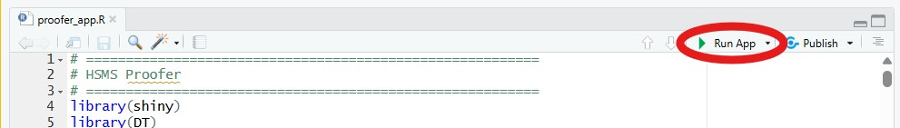
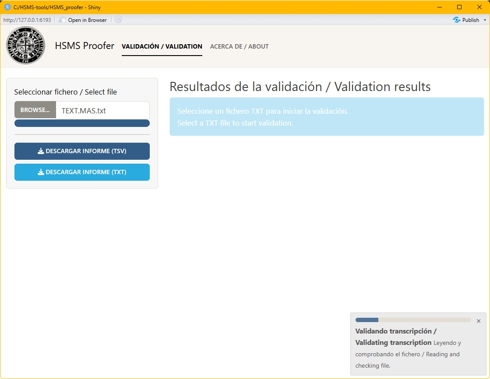
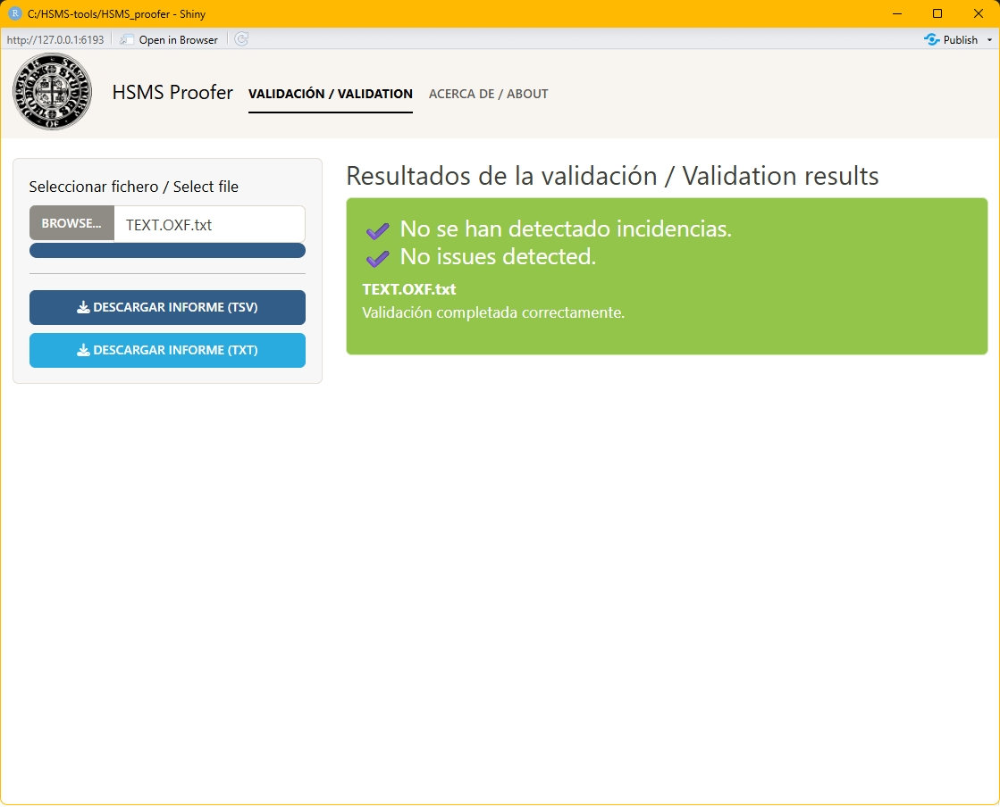
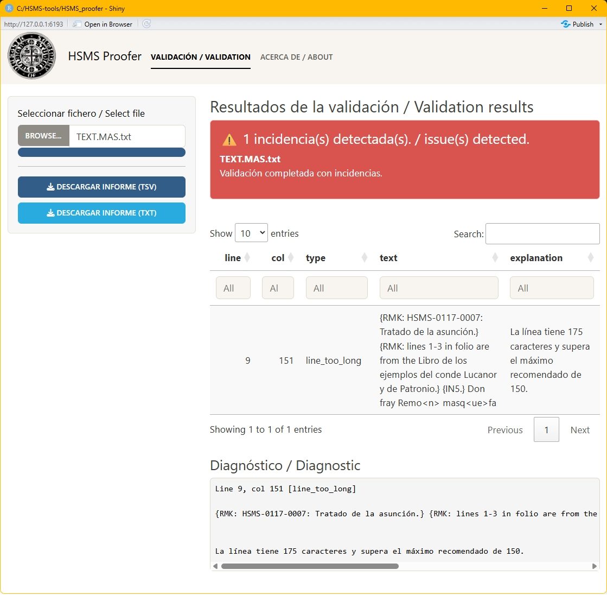
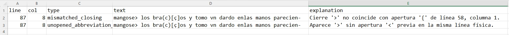
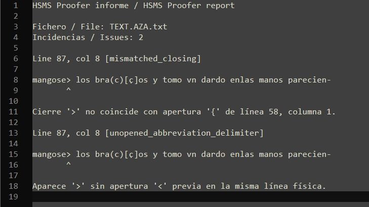

Validación de un fichero
Ejecución de la aplicación
Para ejecutar HSMS Proofer basta con hacer doble clic sobre el fichero proofer_app.R, que se encuentra dentro de la carpeta HSMS-PROOFER. El sistema abrirá RStudio y cargará el archivo automáticamente. A continuación, hay que hacer clic en el botón Run App, situado en la parte superior del editor de RStudio.

Figura 3. Botón Run App en la parte superior del editor de RStudio.
Una vez pulsado el botón, la aplicación se iniciará y se abrirá una nueva ventana.

Figura 4. Interfaz principal de la aplicación.
El proceso completo puede realizarse desde esa ventana. Si se prefiere utilizar el navegador del ordenador, hay que pulsar el botón Open in Browser. En ambos casos, la interfaz de la aplicación será la misma.
Selección del fichero
Para analizar una transcripción realizada según las normas del HSMS, es necesario cargar el fichero correspondiente en la aplicación. Para ello, hay que pulsar el botón Browse…, lo que abrirá el explorador de archivos; a continuación, hay que localizar el fichero que se desea validar y hacer doble clic sobre él.
La carga del fichero inicia automáticamente el proceso de validación, sin que sea necesaria ninguna acción adicional hasta que este concluya. Si el fichero es de gran tamaño o tiene una estructura compleja, el proceso puede tardar varios minutos (aproximadamente 25 segundos por cada 100 KB). Durante ese tiempo, aparecerá una pequeña ventana con una barra de progreso.

Figura 5. Ventana de progreso durante la validación.
Resultado sin incidencias
Si la validación finaliza sin detectar ningún problema, aparecerá un mensaje en verde indicando que no se han encontrado incidencias y no se mostrará ninguna tabla de resultados.

Figura 6. Resultado de una validación sin incidencias.
Resultado con incidencias
Si la aplicación detecta algún problema, aparecerá un mensaje en rojo indicando el número total de incidencias encontradas. Debajo del mensaje se mostrará una tabla con la información detallada de cada incidencia, que incluye los siguientes campos:
- la línea;
- la columna;
- el tipo de incidencia;
- el texto afectado;
- una breve explicación.

Figura 7. Resultado de una validación con incidencias.
Por defecto, la tabla muestra las incidencias en bloques de 10, pero es posible seleccionar cuántas se desean ver en cada página: 10, 25, 50 o 100. Al hacer clic sobre una fila, esta cambiará de color y en la ventana inferior aparecerá la información correspondiente a esa incidencia.
Descarga de informes
A la izquierda de la pantalla hay dos botones que permiten descargar el informe de incidencias:
- Descargar informe TSV: genera una tabla separada por tabuladores, útil para abrir los datos en una hoja de cálculo.

Figura 8. Informe en formato TSV.
- Descargar informe TXT: genera un informe en texto plano, más legible para revisión directa.

Figura 9. Informe en formato TXT.
Ambos formatos contienen la misma información. El fichero descargado se guardará en la carpeta de descargas del ordenador.
Corrección del fichero
HSMS Proofer no corrige automáticamente el texto. Su función es señalar posibles problemas para que el editor los revise y decida cómo actuar. Para ello, se recomienda abrir el fichero de transcripción con un editor de texto plano: Notepad++ en Windows o BBEdit en Mac OS.
Nota: Para el correcto visionado de los ficheros se recomienda utilizar fuentes monoespaciadas: Windows (Cascadia code, Consolas, Courier New o, Lucida Console), Mac OS (Courier & Courier New, Menlo, Monaco, o SF Mono)
Una vez abierto el fichero, hay que ir a la línea indicada en la tabla de incidencias, comprobar el problema señalado y corregirlo si procede.
A modo de ejemplo, si la aplicación informa de la siguiente incidencia:
El folio 2 debe ir de r a v.
y la sitúa en la línea 57, esto indica que puede haber un problema en el orden de los folios: por ejemplo, que aparezca una etiqueta [fol. 2v] antes de [fol. 2r], o que un folio anterior haya sido etiquetado incorrectamente. En este caso concreto, el error consistía en haber escrito [fol. 2v] en lugar de [fol. 1v].
Una vez corregido el fichero, hay que guardarlo y volver a validarlo con HSMS Proofer. Cuando la validación no muestre ninguna incidencia, se puede pasar a la siguiente fase del proceso: la corrección de la transcripción y su posterior procesamiento mediante el analizador corpus OSTA, otra herramienta desarrollada por el HSMS para el tratamiento de los textos incluidos en el Old Spanish Textual Archive.